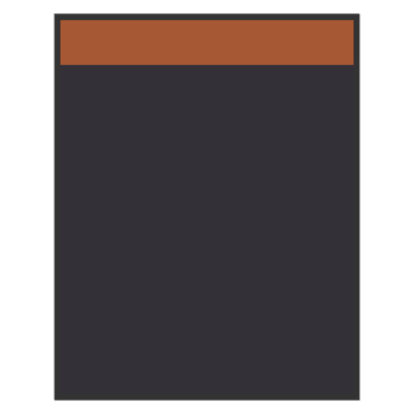
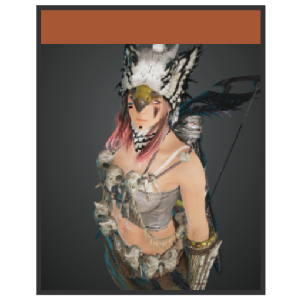
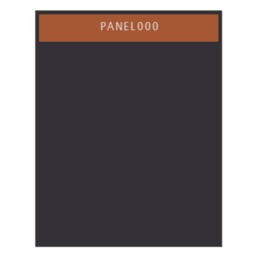
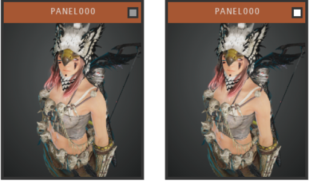
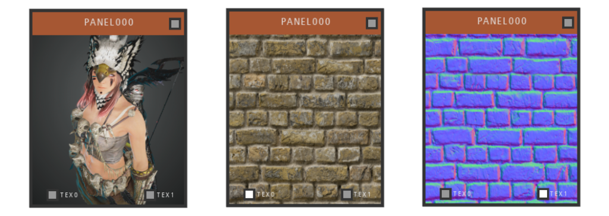
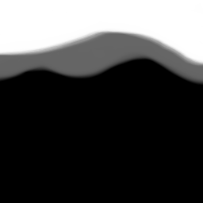
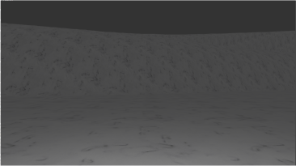
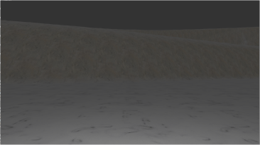
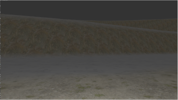

ImCreate
Núcleo
Alguns tipos de dados precisam ser acessados constantemente em diferentes arquivos. Para resolver isso, um arquivo de cabeçalho define tais váriaveis de modo que possam ser facilmente acessados independente do diretório que esteja desde que seja feita as devidas inclusões.
A maioria das classes são derivadas de SRW, e SRW já faz a inclusão desse arquivo, portanto, torna acessivel tais dados em todas as classes atuais. A lista de dados úteis é esta:
- ext_window: um ponteiro para uma janela gerida pelo SDL.
- ext_screen_width: um inteiro para armazenar a largura atual da janela.
- ext_screen_height: um inteiro para armazenar a altura atual da janela.
- QUIT: uma boleana que controla se o laço principal da aplicação está ativo ou não.
Se estiver curioso para verificar todos as varíaveis disponíveis acesse o arquivo em "libraries/Common/Common.hpp".
O núcleo contém apenas uma função de relevância para o usuário desenvolvedor que é discutida na próxima seção.
Inicialização
Para começar a usar os recursos da biblioteca a inclusão do arquivo em "libraries/Common/Core.hpp" deve serfeita.
Uma vez feito tal, declare a função principal com o seguinte protótipo:
int main(int argv, char** args)
Logo após, inicie uma condicional e chame a função initialize como argumento. A função tem o seguinte protótipo:
bool initialize(std::string title, int w, int h, bool border = true, bool fullscreen = false)
Isso efetivamente criará uma janela de contexto OpenGL além de iniciar os subsistemas geridos pelo SDL. Uma vez que leva um título, largura e altura da janela, se deve ou não usar bordas e o modo de abertura da janela, retornará true caso nenhuma falha ocorra, o que siginifica que a partir dessa condicional, todos os recursos da biblioteca estão elegíveis à serem usados. Lembre-se, será dentro desse bloco condicional que toda mágica irá ocorrer.
O código de inicialização é como esse:
if(initialize("Labs", 1366, 768, false)){
...
Câmera
Uma câmera é como um obersvador virtual, o qual podem mover-se pela cena em tempo real.
No atual ponto de desenvolvimento da biblioteca, apenas uma câmera do tipo "FPS" - câmeras que observam a cena em primeira pessoa podendo mover-se nos eixos XYZ com rotações apenas em XY - está disponível.
A criação de uma câmera precede qualquer outro recurso pois é a partir dela que fará sentido observar os objetos em cena.
Veja o seguinte código:
Camera fpsCam(vec3<float> from, vec3<float> to, float fov, float zNear, float zFar);
Onde from é a posição inicial do observador e to a direção em que está olhando.
fov é o ângulo de abertura do campo de visão.
zNear e zFar sãos distâncias mínimas e máximas para o volume de visualiazação. Note que zFar pode ser infinitamente grande, contudo, uma das principais funções da existência de zFar e salvar algum desempenho, já que quanto maior for seu valor mais primitivas deverão ser processadas pela placa de video.
Antes que objetos tridimensionais possam ser instânciados, é preciso salvar as informações da câmera em um buffer compartilhado do qual tais objetos possam ler para então projetar objetos de acordo. Para isso chame a seguinte função da classe SRW:
SRW::sharedUniforms(fpsCam.getViewAndProjectionMatrix(), fpsCam.getPosition(), NULL, NULL, NULL);
Luzes
Perceba que, um mundo sem luz não pode ser observado e o mesmo vale para o ramo da computação gráfica. Uma vez que faça a chamada a função acima tal como ela está, tudo na sua tela será apenas como silhuetas negras. Resolver isso é simples, basta apenas criar ao menos uma luz ou até mesmo um conjunto de luzes.
Luzes podem existir em 3 tipos:
- Pontuais: irradiam a partir de determinada posição em todas as direções.
- Holofote: irradiam a partir de uma determinada posição em uma unica direção conhecida.
- Direcionais: como o sol, são modeladas para estarém distantes de modo que sua luz influência todo objeto em cena.
Vamos começar criando uma luz direcional, será nosso sol:
Sun sun = {vec4<float>(0.0f, 1.0f, 0.0f), vec4<float>(0.2f, 0.2f, 0.2f)};
Aqui Sun é uma classe simples que aceita um vetor de direção e um vetor que representará a cor da luz.
Uma vez criado nosso sol fazemos a chamada a função SRW::sharedUniforms e passamos por referência o objeto sun para o terceiro parâmetro da função:
SRW::sharedUniforms(fpsCam.getViewAndProjectionMatrix(), fpsCam.getPosition(), &sun, NULL, NULL);
Por resultado, os objetos agora terão alguma iluminação e poderão ser visualizados com suas cores e texturas.
Ainda podemos fazer mais, como gerar um conjunto de luzes pontuais e até mesmo holofótes:
std::vector<PointLight> pointLightArray = {
{vec4<float>(0.0f, 2.0f, 8.0f), vec4<float>(80.0f, 0.0f, 0.0f)},
{vec4<float>(8.0f, 2.0f, 0.0f), vec4<float>(0.0f, 80.0f, 0.0f)},
{vec4<float>(0.0f, 2.0f, -8.0f), vec4<float>(0.0f, 0.0f, 80.0f)},
{vec4<float>(-8.0f, 2.0f, 0.0f), vec4<float>(80.0f, 80.0f, 80.0f)}};
std::vector spotLightArray = {{vec4<float>(0.0f, 1.0f, 0.0f, 0.65f), vec4<float>(0.0f, 4.0f, 0.0f, 0.35f), vec4<float>(20.0f, 20.0f, 20.0f)}};
Acima, um vetor de luzes pontuais e holofótes. O tipo PointLight possui membros que definem a posição e cor da luz, enquanto o tipo SpotLight possui membros que definem a direção da luz - com o membro w de vec4 como o ângulo de corte externo-, a posição da luz - com o membro w de vec4 como o ângulo de corte interno e a cor da luz. Obs.: O ângulo de corte externo e interno correspondem ao cosseno de dois circulos usados para o cálculo de atenuação de bordas de uma luz holofóte.
A chamada de função deve então se parecer como essa:
SRW::sharedUniforms(fpsCam.getViewAndProjectionMatrix(), fpsCam.getPosition(), &sun, &pointLightArray, &spotLightArray);
Funções de acesso público
Algumas funções públicas foram usadas anteriormente na chamada de SRW::sharedUniforms. A maioria das funções da classe "Camera" retornam dados membros de modo que possam ser utéis em alguma operação mais tarde. Anteriormente usamos uma chama a getViewAndProjectionMatrix(). Essa função retorna a matriz de visualização e de projeção concatendas. Enquanto a matriz de visualização é responsável em orientar e posicionar os objetos no volume de visualozação, a matriz de projeção pega a informação tridimensional e as converte em algo bidimensional, como uma imagem na tela do monitor. A atualizações da câmera - como quando nos movemos pelo cenário - significam novas transformações lineares e projetivas nas matrizes "View" e "Projection" que devem refletir no buffer de uniformes compartilhados.
getPosition() pode ser facilmente deduzido. Obter a posição atual da câmera é relevante quando os sombreadores precisam desse dado para calcular a reflexão da luz incidente sobre uma superfice.
O que sobra é dizer como atualizar os dados membros de um objeto do tipo "Camera". Não há mistérios. Quando nos movemos em um ambiente 3D, como num jogo, usamos em geral dois tipos de entrada: o teclado e o mouse. Um objeto da classe "Camera" vêm com duas funções para gerenciamento de eventos. Então tudo que deve ser feito é dentro do bloco do laço de eventos, fazer a chamada as respectivas funções: keyboardEvent(SDL_Event* event) e mouseEvent(SDL_Event* event) passando como parâmetro a referência de um objeto SDL_Event criado previamente. Uma vez que as entradas de eventos estejam sendo capturadas, após o fechamento do laço de eventos, chame a função da classe "Camera" updateCoordinates() e após SRW::updateUniforms(fpsCam.getViewAndProjection(), fpsCam.getPosition(), 0), essa função irá atualizar o buffer de uniformes compartilhados.
Outras funções podem ser encontradas na referência da bliblioteca.
Audio
ImCreate usa OpenAL para reproduzir sons tridimensionais e acrescentar maior imersão as cenas fornecendo "pan orientado" e recursos de atenução do som em função da distância do ouvinte para fonte emissora. A atenuação pode ser resolvida pelas seguintes equações:
AL_INVERSE_DISTANCE_CLAMPED
distance = max(distance, AL_REFERENCE_DISTANCE);
distance = min(distance, AL_MAX_DISTANCE);
gain = AL_REFERENCE_DISTANCE / (AL_REFERENCE_DISTANCE + AL_ROLLOFF_FACTOR) * (distance - AL_REFERENCE_DISTANCE);
Onde "AL_REFERENCE_DISTANCE" é a distância máxima para fixação do ganho, ou seja, sem atenuação pela distância.
Onde "AL_MAX_DISTANCE" é a distância máxima para afetar a atenuação. O ganho será variável entre ]AL_REFERENCE_DISTANCE, AL_MAX_DISTANCE].
Onde "AL_ROLLOFF_FACTOR" é uma variável de compensação no intervalo [0.0f, Inf[ - infinito, mas a API irá dar um jeito de fixar os valores entre 0.0f e 1.0f - que escala a atenuação do ganho pela distância.
Dado tal equação, é possível notar que o ganho nunca será igual a zero.
AL_LINEAR_DISTANCE_CLAMPED
distance = max(distance, AL_REFERENCE_DISTANCE);
distance = min(distance, AL_MAX_DISTANCE);
gain = 1 - AL_ROLLOFF_FACTOR * (distance - AL_REFERENCE_DISTANCE) / (AL_MAX_DISTANCE - AL_REFERENCE_DISTANCE);
A equação que determina a redução do ganho linearmente conforme a distância aumenta. Esse é o modelo estendido de AL_LINEAR_DISTANCE para fixar o ganho para distâncias menores que AL_REFERENCE_DISTANCE. Por ser uma função linear, após AL_MAX_DISTANCE o ganho será 0.
AL_EXPONENT_DISTANCE_CLAMPED
distance = max(distance, AL_REFERENCE_DISTANCE);
distance = min(distance, AL_MAX_DISTANCE);
gain = (distance / AL_REFERENCE_DISTANCE) ^ (-AL_ROLLOFF_FACTORY);
O ganho varia exponencialmente inversamente proporcional á distância.
AL_NONE
Esse valor desativa a funcionalidade de atenuação do ganho em função da distância.
Emitindo sons
"Fontes" são como a API OpenAL define um emissor de som no espaço tridimensional. Fontes são armazenadas na pilha interna de uma instância da classe Audio e armazenads em um único buffer vinculado ao primeiro dispositivo de som elegível.
Para começar a usar os recursos de audio chame Audio::initialize(vec3<float>(0.0f) from, vec3<float> to, int distanceModel) passando como argumentos respectivamente a posição inicial do observador e a direção de visualização.
Uma classe "Emitter" é responsável por armazenar as informações de uma fonte que deve ser passada como argumento para um objeto da classe Audio por meio da função setEmitters(std::vector<Emitter>& emitters) - para permitir que um conjunto de emissores sejam enviados em apenas uma chamada, o argumento deve sempre ser um vetor de "Emitters". Exemplo:
std::vector ambience = {
{Emitter("../assets/sfx/water.wav", vec3(0.0f), 1.0f, 8.0f, 1.0f, 1.0f, AL_FORMAT_MONO16)}
// Quantos mais emissores desejar...
};
Audio sfxList000;
sfxList000.setEmitters(ambience);
Sendo os parâmetros do construtor de Emitter o caminho do arquivo de áudio, a posição da fonte, a distância de referência, a distância máxima, o fator de compensação de ganho, o ganho relativo e o formato á ser reproduzido.
Uma coisa a notar é o último parâmetro. format pode ser AL_FORMAT_MONO8, AL_FORMAT_MONO16, AL_FORMAT_STEREO8, AL_FORMAT_STEREO16, sendo que para que uma fonte tenha um comportamento tridimensional, OpenAL apenas suporta formatos mono, formatos estéreos desabilitarão as configurações de pan e atenuação.
Reproduzindo som
Uma vez que um objeto "Audio" esteja devidamente criado e inicializado, antes de acessar o laço principal, chame a função play() pertencente a classe Audio. Uma vez que os sons são selecionados para reprodução de acordo com a distância entre a fonte e o ouvinte, a função play() é útil para auxiliar que o algoritmo de seleção por distância possa deduzir qual será o estado inicial de uma fonte(se deve ser reproduzida ou não). Por último, atualize a posição do ouvinte a cada novo quadro - o ouvinte tem as mesmas coordenadas que o observador - posição e orientação. Veja o exemplo:
...
// Dentro do laço principal, após atualizar a câmera
Audio::updateListener(fpsCam.getPosition(), fpsCam.getTarget());
Interface Gráfica de Usuário - GUI
Os recursos de interface gráfica de usuário - GUI - fazem parte da biblioteca 'Imcreate' sendo inteiramente desenvolvida usando os príncipios de renderização OpenGL.
Versão atual: 0.0.0
Para começar a usar objetos do tipo GUI, deve-se fazer a inclusão do arquivo de cabeçalho em "libraries/GUI/GeneralGUI.hpp".
Todos os objetos de interface gráfica compartilham funções e dados em comum com a classe base GUI. Dado tal, cada especialização da classe possui sua lógica própria de construção.
Criando Painéis
Painéis são idealmente contâiners para um grupo de objetos. Por padrão, painéis são criados com a região do cabeçalho como a área de eventos - como agarrar e selecionar.
Para grande maioria dos casos, questões visuais e de posicionamento são decidas no construtor do objeto:
Panel panel000(float x, float y, float w, float h, float thickness, vec4<float> backgroundColor, vec4<float> headerColor, vec4<float> borderColor, GUI_PanelLayout panelLayout = ON_WINDOW);
Os parâmetros x, y e w, h dizem respeito ao posicionamento e dimenções do painel respectivamente dados em porcentagem.
thickness é a espessura da borda.
backgroundColor, headerColor, borderColor são como intuitivamente seus nomes definem - note que o canal alpha pode ser especificado.
panelLayout é onde um objeto deve ser posicionado se for atribuído à outro objeto. Os tipos de layout são:
Exemplo
Panel panel000(50.0f, 50.0f, 20.0f, 45.0f, 6.0f, vec4<float>(0.2f, 0.19f, 0.22f), vec4<float>(0.65f, 0.34f, 0.2f), vec4<float>(0.2f, 0.2f, 0.2f));
O código anteriror criar o seguinte resultado:
A região alaranjada é a área que denota o cabeçalho, enquanto a região azul cinzenta define o corpo do painel.
Texturas
Painéis podem receber uma imagem de fundo ao invés de apenas uma cor uniforme. Para isso deve-se instânciar um painel normalmente - defindo até mesmo sua cor uniforme(ela será ignorada se uma textura for fornecida) - e após bastas chamar a função addTexture(std::string path, std::string uniformName, uint index)
Exemplo:
panel000.addTexture("../assets/textures/alpha/ranger.bmp", "img", 0);
O código anterir cria o seguinte resultado:
Obs.: O nome uniforme sempre deve ser "img" seguido do indíce 0 ou então o sombreador irá assumir um comportamento indeterminado.
Obs².: addTexture é uma função que pertence a classe base SRW, o que indica a dependência de GUI por SRW. Essa informação pode ser útil para flexibilizar as possibilidades de programação, mas painéis não foram projetados para usaram mas do que uma chamada de addTexture - se o fizer, a última chamada será válida - ou de qualquer outra função da classe SRW. Apesar de ser possível, não é legal.
Relacionamento
Todo objeto do tipo GUI pode manter uma relação pai-filho com outro objeto. Isso permite que objetos tenha sua posição, dimensão e visibilidade relativos ao objeto pai. Como um relacionamento um para muitos, o objeto pai será sempre o último definido.
Para tornar um objeto agregado a outro, após construir ambos objetos, chame a função pública push(GUI* guiObject):
father.push(&children);
Exemplo:
Panel panel000(50.0f, 50.0f, 20.0f, 45.0f, 6.0f, vec4<float>(0.2f, 0.19f, 0.22f), vec4<float>(0.65f, 0.34f, 0.2f), vec4<float>(0.2f, 0.2f, 0.2f));
Text title000("../assets/fonts/Humnst777.ttf", 18.0f, 50.0f, 50.0f, vec3<float>(0.9f), "PANEL000", ON_HEADER);
panel000.push(title000);
O código anteriror criar o seguinte resultado:
"Text" é mais um tipo de objeto GUI. Seu construtor aceita um caminho para fonte a ser usada, o tamanho da fonte em pixels, sua posição, cor da fonte, a string a ser exibida e o layout de posicionamento.
Eventos
Um aspecto crucial de uma interface de usuário é operar eventos com base na ação do usuário. Eventos especiais podem ser criados
a partir de um função lambda passada como parâmetro da função setUserEvent([&](){ /***meu evento***/ }).
Exemplo:
...
title000.setUserEvent([&](){
panel000.setHidden(true);
});
O bloco de código anterior irá esconder o objeto painel000 quando o usuário clicar sobre o título do painel.
Gerenciamento
Toda vez que um novo objeto GUI é criado ele será armazenado numa pilha interna definida na classe base GUI. Assim sendo, não é necessário chamar para cada objeto individual funções de renderização e entrada de eventos do sistema, bastando apenas no loop de renderização chamar GUI::stackRender() e GUI::stackEvent() no loop de eventos.
Obs.: Ter objetos na pilha interna da classe base permite auto organizar a sobreposição dos painéis de modo que o objeto selecionado será sempre trazido a tona.
Note: Sempre que um objeto for definido como filho, ele será retirado da pilha interna da classe base e passará a ser gerenciado pela pilha interna do objeto pai - isso também desabilitará agarrar para mover no objeto filho.
Checkbox
Checkbox são objetos úteis para sinalizar visualmente comportamentos binário, ou estão ativos ou estão desativados.
Não existem muitas coisas especiais para um checkbox, a funcionalidade binária deve ser implementada arbitráriamente pelo programador seguindo o princípio de ativar/desativar na callback definada pela chamada à setUserEvent.
Exemplo:
Panel panel000(50.0f, 50.0f, 20.0f, 45.0f, 6.0f, vec4<float>(0.2f, 0.19f, 0.22f), vec4<float>(0.65f, 0.34f, 0.2f), vec4<float>(0.2f, 0.2f, 0.2f));
Text title000("../assets/fonts/Humnst777.ttf", 18.0f, 50.0f, 50.0f, vec3<float>(0.9f), "PANEL000", ON_HEADER);
panel000.push(title000);
Checkbox cbxPinPanel000(98.0f, 50.0f, ON_HEADER);
cbxPinPanel000.setUserEvent([&](){
cbxPinPanel000.setOn(!cbxPinPanel000.getOn());
panel000.setPin(!panel000.getPin());
});
panel000.push(&cbxPinPanel000);
O bloco de código anterior posicionará um checkbox no cabeçalho de panel000. Ao marcar o checkbox, o painel ficará fixo em sua posição atual não podendo ser movido até que o checkbox seja desmarcado.
Checkbox podem ser usadas em conjunto assumindo uma relação semântica de ativação. Isso é útil para ter apenas uma opção de uma seção de opções ativa. Para isso é preciso definir um conjunto de checkbox como um grupo:
Panel panel000(50.0f, 50.0f, 20.0f, 45.0f, 6.0f, vec4<float>(0.2f, 0.19f, 0.22f), vec4(0.65f, 0.34f, 0.2f), vec4<float>(0.2f, 0.2f, 0.2f));
panel000.addTexture("../assets/textures/alpha/ranger.bmp", "img", 0);
Text title000("../assets/fonts/Humnst777.ttf", 18.0f, 50.0f, 50.0f, vec3<float>(0.9f), "PANEL000", ON_HEADER);
Text txtTex0("../assets/fonts/Humnst777.ttf", 12.0f, 20.0f, 3.0f, vec3<float>(0.9f), "TEX0", ON_BODY);
Text txtTex1("../assets/fonts/Humnst777.ttf", 12.0f, 92.0f, 3.0f, vec3<float>(0.9f), "TEX1", ON_BODY);
Checkbox cbxPinPanel000(98.0f, 50.0f, ON_HEADER);
Checkbox cbxTex0(10.0f, 2.0f, ON_BODY);
Checkbox cbxTex1(80.0f, 2.0f, ON_BODY);
Group groupTexOptions;
groupTexOptions.checkbox.push_back(&cbxTex0);
groupTexOptions.checkbox.push_back(&cbxTex1);
title000.setUserEvent([&](){
panel000.setHidden(true);
});
cbxPinPanel000.setUserEvent([&](){
cbxPinPanel000.setOn(!cbxPinPanel000.getOn());
panel000.setPin(!panel000.getPin());
});
cbxTex0.setUserEvent([&](){
groupTexOptions.doUnique(cbxTex0.getID());
cbxTex0.setOn(!cbxTex0.getOn());
if(cbxTex0.getOn())
panel000.addTexture("../assets/textures/brick_wall/yellow_bricks_diff_1k.jpg", "img", 0);
else
panel000.addTexture("../assets/textures/alpha/ranger.bmp", "img", 0);
});
cbxTex1.setUserEvent([&](){
groupTexOptions.doUnique(cbxTex1.getID());
cbxTex1.setOn(!cbxTex1.getOn());
if(cbxTex1.getOn())
panel000.addTexture("../assets/textures/brick_wall/yellow_bricks_nor_gl_2k.jpg", "img", 0);
else
panel000.addTexture("../assets/textures/alpha/ranger.bmp", "img", 0);
});
panel000.push(&cbxPinPanel000);
panel000.push(&title000);
panel000.push(&txtTex0);
panel000.push(&txtTex1);
panel000.push(&cbxTex0);
panel000.push(&cbxTex1);
O código anterior resultará nas seguintes imagens:
Escolher entre "Tex0" e "Tex1" ou nenhum alternará a textura exibida no corpo do painel.
A parte diferêncial nesse código é a instanciação do objeto groupTexOption. Uma vez que um objeto "Group" é criado, devemos atribuir os objetos checkbox desejados a pilha interna do grupo por meio do membro checkbox, e então dentro da callback de evento de cada checkbox chamar a função doUnique pertencente ao objeto do tipo Group passando o identificador do checkbox em questão como parâmetro. O que essa função faz é desinalizar todos os outros checkbox do grupo uma vez que o atualmente clicado esteja ativo.
Text
Text é projetada para usar fontes bitmap. Isso traz certas problemáticas ainda não resolvidas que afetam o visual de carácteres minúsculos. É por essa razão que os calculos de alinhamento as vezes não parecem corretos ou o texto parece ser de baixa resolução. Apesar disso, a classe Text pode continuar em seu uso pleno pois ao refatora-lá o seu relacioanamento com outros objetos do tipo GUI deve continuar o mesmo.
Terrenos
Carregar terrenos é um tarefa facil. Terrenos são criados a partir de uma imagem de tons de cinza geralmente - conhecida como mapa de altura. Desde que você fornece um mapa de altura, a biblioteca fará as tarefas adicionais de interpretação e geração do modelo tridimensional.
Na imagem, a cor branca representa o máximo de altura e a cor preta o mínimo:
Essa imagem criará uma planíce que se alonga até encontrar um relevo acidentado de dois níves próximo a sua borda superior.
Para criar um objeto Terrain primeiro inclua o cabeçalho do arquivo "libraries/Terrain/Terrain.hpp" no seu projeto e então use a seguinte declaração:
Terrain(const char* path, unsigned char bitsPerPixel, unsigned int width, unsigned int height, float hs, float bs)
O parâmetro path recebe o caminho da imagem a ser usada. Note que a biblioteca apenas lê arquivos do tipo .raw, ou que não tenha nem um cabeçalho adicional como nos formatos compactados. Formatos raw podem ser exportados no photoshop - um meio alternativo e usar o formato .r8 do Krita.
O parâmetro bitsPerPixel é a profundidade em bits por pixel, podendo ser de 8 bits - tons de cinza - 16 bits ou 24 bits.
width e height são as dimensões da imagem.
hs é a escala de altura e bs o tamanho de um bloco. Gerar terrenos se basea em gerar uma grade, onde cada intersecção da linhas que compõem a grade são um ponto de controle. Manipular esse ponto de controle significa torná-lo mais branco ou mais preto. O mapa de altura como uma imagem, tem seus valores por pixel armazenadas no intervalo de 0 a 255 como uma grade e que serão normalizados para o intervalo [0, 1], veja, que quando falamos no universo virtual, a noção de escala é algo arbitrário. Portanto, tais valores não serviriam para fazer um grande deslocamento tal como uma montanha, logo é preciso usar um valor escalar para dimensionar um deslocamento mais adequado e é isso que hs é. bs vem de block scale - escala do bloco-, significa o quão equidistante os pontos de controle estão um do outro. Ajustar esse valor resultará diretamente em quanto impacto hs terá como escala uma vez que tal ajuste mudará o diâmetro horizontal do terreno.
Texturização multi-camadas
A texturização multi-camadas consiste em fornecer três diferentes grupos de texturas:
- Textura de base: é a textura de camada 0. Ela deve preencher toda superfície.
- Textura de declive: é a textura de camada 1. As superfícies que apresentam determinado declive tendem a ter sua textura de camada 0 misturada a textura de camada 1, logo quanto maior for a inclinação da superficie mais a texturização tenderá para camada 1 e quanto menor for mais tenderá para camada 0.
- Textura de caminho: é a textura de camada 2. A textura de caminho determina onde preencher a partir de uma textura de máscara, a qual irá sobrebor toda superficie que esteja dentro da área onde os pixels tenderem ao preto.
Esse é um exemplo de textura de caminho.
Os efeitos de usar a camada 0, camada 0 + camada 1 e camada 0 + camada 1 + camada 2 pode ser observados, respectivamente nas imagens a seguir:
  Para carregar as texturas da camada 0, 1 e 2 use as seguinte chamadas de função respectivamente:
setBaseTex(std::string pathAlbedo, std::string pathNormal, std::string pathRough, std::string pathAO)
setSlopeTex(std::string pathAlbedo, std::string pathNormal, std::string pathRough, std::string pathAO)
setPathTex(std::string pathMask, std::string pathAlbedo, std::string pathNormal, std::string pathRough, std::string pathAO)
Os parâmetros pathAlbedo, pathNormal, pathRough, pathAO recebem o caminho das texturas - de acordo com o fluxo de trabalho de iluminação baseada fisicamente - que são esperadas estarem no direitório "assets/textures/terrain/". pathMask é referente ao diretório da textura que servirá de mascará para o terreno.
Uma implementação prática
A quantidade de terrenos por cena é irrestrita, uma vez que basta instânciar um objeto do tipo terreno e então no laço de renderização chamar a função membro render() de "Terrain".
Terrenos, como obetos tridimensionais, possuem um matriz de transformação de modelo que pode ser acessada por meio da função getModel() e então escalonada, rotacionada ou transladada. Veja o código exemplo:
Terrain terrain("../assets/textures/terrain/maps/heightmap000.r8", 8, 256, 256, 40.0f, 2.0f);
terrain.setBaseTex("snow_02_diff_1k.jpg", "snow_02_nor_1k.jpg", "snow_02_rough_1k.jpg", "snow_02_ao_1k.jpg");
terrain.setSlopeTex("rock_wall_02_diff_1k.jpg", "rock_wall_02_nor_gl_1k.jpg", "rock_wall_02_rough_1k.jpg", "rock_wall_02_ao_1k.jpg");
terrain.setPathTex("pathMask001.bmp", "grass_path_2_diff_1k.jpg", "grass_path_2_nor_1k.jpg", "grass_path_2_rough_1k.jpg", "grass_path_2_AO_1k.jpg");
terrain.setUniform1f("material.metallic", 0.0f);
terrain.getModel() = rotateY(45.0f);
Obs.: Perceba a chamada a setUniform1f. O que isso faz é determinar o quão metálico uma superfície se parece. Idealmente, cada conjunto de texturas deveria ter o seu respectivo material metálico, contudo, usar apenas um flutuador como entrada metálica, faz com que todo terreno assuma o comportamento de um metal quando a luz irradiar sobre ele. Apesar de uma limitação para simulação visual, é suficiente.
Uma vez que o programa esteja para ser encerrado, chame a função free() da classe Terrain para realizar o desalocamento de recursos.
Bibliotecas auxilíares
Matemática
O arquivo "Math.hpp" disponível no diretório "librarires/Math/" fornece uma série de funções e tipos de dados de cunho matemático como:
- mat2<T>
- mat4<T>
- vec2<T>
- vec3<T>
- vec4<T>
- T radians(T angle)
- vec3<T> normalize(vec3<T>& vector)
- vec3<T> cross(const vec3<T>& a, const vec3<T>& b)
- T dot(const vec3<T>& a, const vec3<T>& b)
- mat4<T> lookAt(const vec3<T>& eye, const vec3<T>& target, const vec3<T> up)
- mat4<T> perspective(T fovy, T aspect, T zNear, T zFar)
- mat4<T> perspective(T angle, T w, T h)
- mat4<T> orthographic(T l, T r, T b, T t, T near, T far)
- mat4<T> orthographic(T l, T r, T b, T t)
- mat4<T> translate(vec3<T> v)
- mat4<T> scale(vec3<T> v)
- mat4<T> rotateX(T angle)
- mat4<T> rotateY(T angle)
- mat4<T> rotateZ(T angle)
Classes:
Funções:
Uma descrição detalhada sobre será feita em breve.
Classes auxiliáres de dados de iluminação
- PointLight
- SpotLight
- Sun
- Material
Uma descrição detalhada sobre será feita em breve.